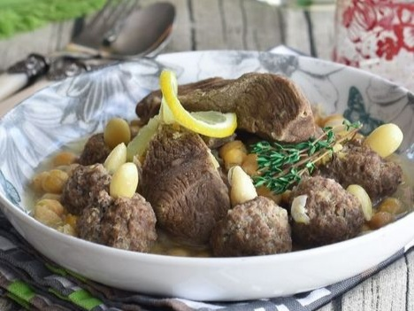

Rechta

description
Mtewem is a traditional Algerian dish that features lamb or mutton cooked in a flavorful broth with a variety of aromatic spices. The dish is known for its rich and savory flavor, and it is often enjoyed with bread.
Ingredients
- 500g of lamb or mutton
- 500g of minced lamb or mutton
- 1 large onion
- 5 cloves of garlic
- 1 cup chickpeas, soaked overnight
- 2 tablespoons vegetable oil
- 1 teaspoon ground coriander
- 1 teaspoon ground cinnamon
- 1 teaspoon cumin
- 1 teaspoon paprika
- Salt and black pepper
- 1 egg
- 1 cup of breadcrumbs
- chopped parsley
Steps
Step one
- In a recipient put the minced meat then add the egg, 2 cloves of minced garlic, the spices listed above, the breadcrumbs, salt and pepper and some of the parsley.
- Mix everything well then form the meatballs.
Step two
- In a pot heat the vegetable oil, then add the meatballs and brown them, then remove them from the pot.
- After you take the meatballs out, add the chopped onion and minced garlic and sauté.
- Add the pieces of meat and brown them on all sides, then add the spices and salt and pepper.
- Pour enough water into the pot to cover the meat, and bring everything to a boil.
- After you bring the mixture to a boil, add the meatballs and the chickpeas.
- cover the pot and lower the heat and let everything simmer until the meat is tender. This could take 1 to 2 hours, depending on the meat.
- Add the rest of the parsley on top after you turn off the heat